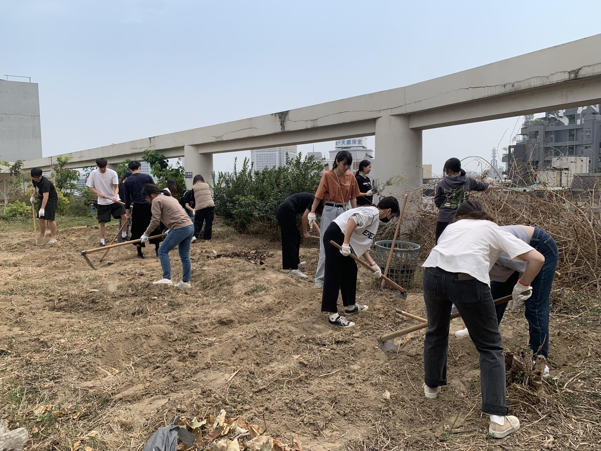
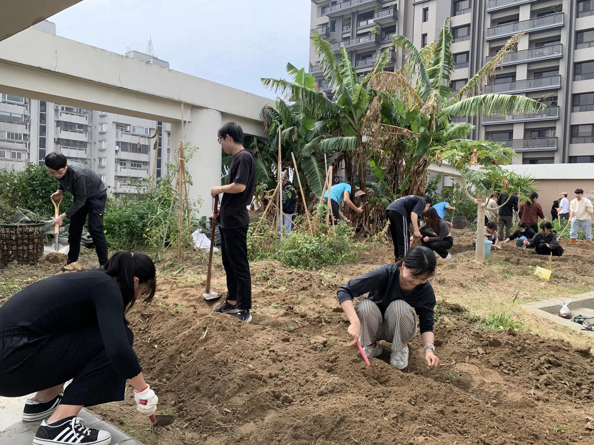
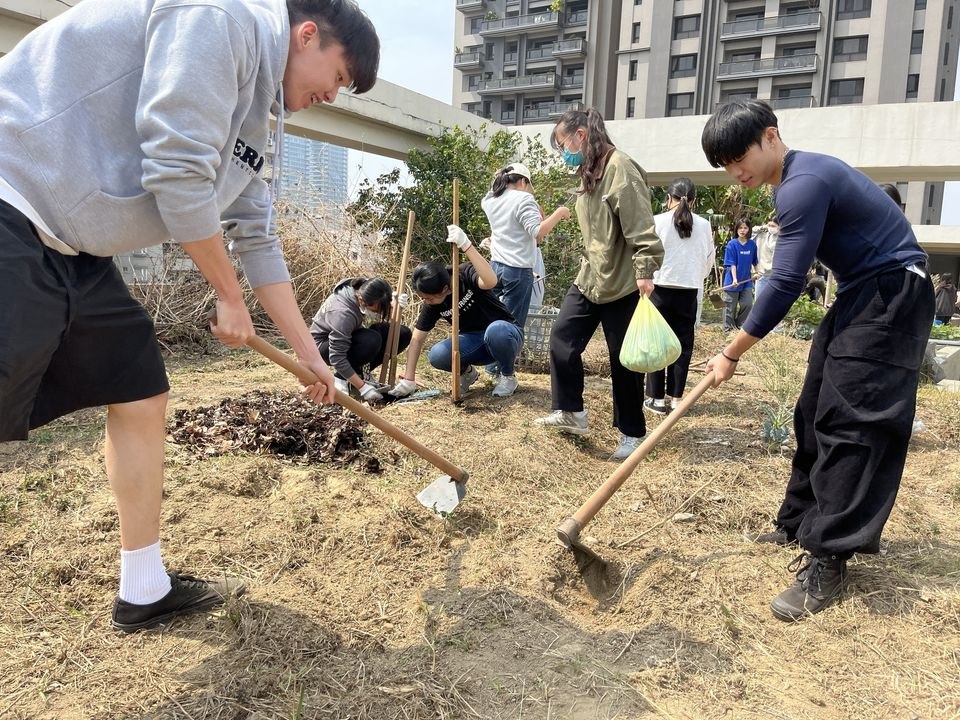

📝 計畫簡介
這裡請貼上您的成果文字。例如：「食農教育」(Food and agricutural education)涵括農業教育、飲食教育和環境教育三大領域，是一門非常看重「動手做」「做中學」的跨領域學門，完全實踐杜威教育哲學所強調「做中學」(Learning by doing)。食農教育強調必須在飲食與耕作之間，透過親身的體驗，深刻理解人與自然、農業、生態、飲食的關聯，是一門重新連結「人」與「食物」關係的生活教育與生命教育。食農教育以環境永續發展為前提，立基於全球生態環境保護的基礎，以促進滿足個人營養需求和身心健康的飲食觀念及實踐為起點，嘗試把每個都是「消費者」的個人，帶回食物生產的現場並認識食物原貌，以教育目的和方法，達到環保、永續、正義意涵為主軸的綠色飲食實踐，提倡土地永續和社會正義的農林漁牧施作方式，親身實踐友善環境的土地照顧方法，延續並發展在地的、社區、富有歷史傳統的意涵的及多元的飲食文化特色。
成果影像紀錄

活動場景紀錄 A

課堂實作細節 B

學生作品展示 C
學生心得分享
"
「心得內容...」
— 教育學系 王同學
"
「心得內容...」
— 數位系 李同學
"
「這是第三位同學的心得內容，你可以直接複製這整個 div 區塊。」
— 語文系 張同學
"
「這是第四位同學的心得內容，Grid 會自動幫你換行排整齊。」
— 美術系 趙同學
"
「心得內容...」
— 教育學系 王同學
"
「心得內容...」
— 數位系 李同學